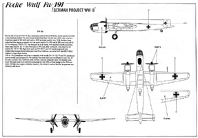

{kind=link}
{kind=link}
{kind=link}
{kind=link}
{kind=link}
{kind=link}


Planet Models 1/72 Focke Wolf Fw-191
Kit #038
MSRP $53.00
Images and text Copyright © 2007 by Gary Buchanan
Developmental Background
The Focke-Wulf Fw 191 was one of the two primary finalists in the "Bomber B" program. Two prototypes were initially built, the V1 and V2. The V1 began its flight test program in early 1942. It was intended to use the Jumo 222 engines but as these were not yet ready for use so the prototypes were powered by BMW 801 air cooled radials as they were the most powerful engines available and were generally the same physical size as the Jumo 222. The most unusual feature of the 191 was the use of electric motors for every device that would have normally been actuated mechanically or hydraulically. This extensive use of electrics had been done at the request of the research department of the RLM despite protests from Focke-Wulf. The large amount of wiring involved and the motors themselves added an immense amount of additional weight. From the outset of flight testing the electrical systems proved to be a constant source of problems. Also the aircraft with the BMW 801's was seriously under powered. After 10 hours of flight-testing had been completed the flight test program was halted and further prototype construction was shelved pending the correction of the electrical problems and the availability of more powerful engines. Three additional prototypes had been ordered but it was obvious that the Jumo 222 engines would have a longer gestation period than had been foreseen and doubts were had that it would ever achieve production status. Focke-Wulf had made repeated applications to the RLM for permission to replace the more troublesome electrical systems with hydraulics systems and in late 1942 with the delivery of two flight cleared Jumo 222's the decision to complete the least advanced prototype, the V6 with hydraulic systems and the 222's. The V6 flew in the Spring of 1943 but the flight characteristics were still far from satisfactory. Shortly thereafter the RLM announced the termination of the entire "Bomber B" program and by the end of 1943 all work on the Fw 191 ceased.
The kit
The Planet Models kit is an all resin kit with vacuformed transparencies. It comes packaged in a sturdy two part top opening box with the usual Planet Models black and white artist sketch on the front. Inside, as shown below, the parts are packed in individual bubbles of what appears to be a continuous bag. Each section is has been heat-sealed and the air inside helps keep the parts from being damaged. Looking things over before unpacking it appears that all parts were intact and in good condition. The fuselage is hollow which helps keep the weight down. The cockpit has minimal details with seats, floor, instrument panel, control column and bulkheads to provide a separate area for the gunner's station. The transparent parts were in their own bag along with the decals. The decals are by Propagteam and appear thin and in register with the usual swastika kits. The canopy parts were clear with reasonable frame moldings. By my count there are 76 resin parts and 4 vacuform parts for a total of 80 parts. Once I started unwrapping things, I found that the large parts had an over all smooth matte finish but there were numerous pinholes in some areas. The lower wing areas seemed the worst with only a few found on the fuselage, the photo below shows an area of the lower side of a wing...
You may click on the small images above to view larger pictures
While not a showstopper, pinholes add to the time required to finish a kit. Some of the pour stubs looked like they might be a challenge to remove but most of the parts seemed well formed with little if any warping. The wing fuselage joint is just a butt joint so some reinforcement will be required. The panel lines are recessed and consistent although the portion of the fuselage aft of the wings has no panel lines at all. The two major areas of concern for me were the landing gear struts, which did not have a stiffener in them and the propeller blades. The propeller blades had apparently been problematic in molding as four extra were supplied with the kit but all of them suffered from problems at the tips, either incomplete filling of the mold or air bubbles, see photo...
An anomaly exists with the propellers. The kit supplies parts for 4 bladed, narrow cord props yet all of the photo's I could find of the first prototypes have wide cord three bladed props. The engines appear to be the BMW 801's and the although the assembly page shows the four bladed props the illustration on the side with the painting and marking instructions shows three bladed props.
I have not seen any photos of the V6 equipped with the Jumo 222's, it may have had four bladed props as other aircraft equipped with them did, but the engines supplied are the BMW's so a three bladed prop should be the correct choice. The kit also does not supply the fan, which was an integral part of all BMW 801 engines. There are other kits out there that the props as well as engines and fans could be scavenged. Italeri, Testors and Revell at one time or another have released a Do 217K-1 which one could use the engines, fans props and cowling if desired or just the props and fans.
As was shown previously the instructions consist of a single A4 size page printed on both sides, one side has history and painting instructions and the other has a drawing showing how the kit goes together. You may click on the small images below to view larger pictures.

Conclusions
The kit is pretty much standard fair for limited run resin kits. The detail level is nice for the scale. The kit should build into a nice representation of an obscure aircraft. All three of the 'B Bomber' program aircraft that were actually built and flown are available now and the forth that never got beyond a mockup is scheduled to be released soon. The kit should not present any major problems to anyone who has built a few all resin kits.